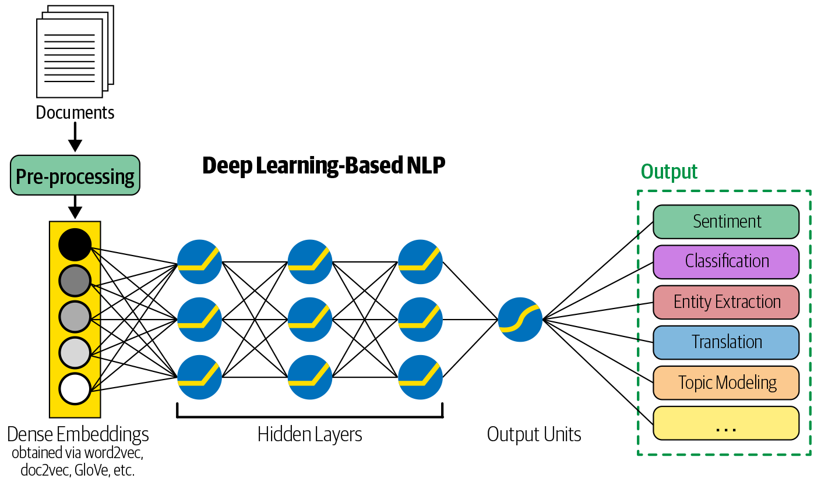

3.1 Feature Engineering
Turn cleaned text into numbers a model can use.
These notes walk through the lecture slides. The original deck is unchanged; use (slides) on the course hub if you want that PDF.
1. Text is not a table
A classifier wants a numeric vector per document (or per span). Feature engineering (also called feature extraction) is how you build that vector.
Two families:
| Family | Who designs the features | Typical look |
|---|---|---|
| Classical NLP + traditional ML | You | Counts, ratios, flags, TF–IDF |
| Deep learning | The network | Embeddings learned from the raw (cleaned) text |
Note 3.1 is the choice. Later weeks build bag-of-words, TF–IDF, and embeddings in detail. Here you need the job description and the tradeoff.
2. Handcrafted features
Example. Sentiment on product reviews. One usable vector:
- count of positive lexicon words
- count of negative lexicon words
- maybe length,
!count, anotflag
A linear model on those counts is already a system. You can say how much each feature moved the score. That is the main advantage of handcrafted features: interpretability.
Other classical features you will meet:
| Feature | What it records |
|---|---|
| Bag of words | Raw token counts (or binary presence) |
| TF–IDF | Counts down-weighted if the word is common in the corpus |
| n-grams | Consecutive token pairs/triples (not good) |
| POS / NER counts | How many adjectives, how many ORG spans |
| Metadata | Length, language, time of day, source |
You design them from error analysis. If the model misses negation, add a negation feature. If it confuses product names with sentiment, add a lexicon flag.
The cost: every new domain needs new features. That becomes the bottleneck for both accuracy and calendar time.
3. Learned features
In a deep-learning pipeline you still clean and tokenize, but you do not hand-build a lexicon vector. The model learns a representation from the labeled data (note 1.2). Those features usually fit the task better than a list you wrote.
The cost: you lose a simple story. Weights sit on dimensions that do not mean “positive word count.” Explaining a single prediction is hard.

A practical middle: use a pre-trained embedding or transformer as the representation, then a small classifier on top. You still did feature engineering — you chose the representation — but you did not count words by hand.
4. What to pick this semester
| Situation | Start with |
|---|---|
| Small data, need to explain the call | Handcrafted + logistic regression or Naive Bayes |
| Medium labeled set, bag-of-words is enough | TF–IDF + a linear model |
| Lots of data, accuracy first | Learned embeddings / a neural model |
| You have no labels yet | Do not start with a deep net; get labels or use heuristics (note 3.2) |
Features must be computed the same way at train time and at serve time. If you lowercase in training and not in production, the vector is a different language.
Leakage is a feature bug: if a “source file” id or a timestamp perfectly separates classes, the model looks strong and fails in production. Look at the top-weighted features. If they are not about the text, you engineered the wrong thing.
5. A worked sketch
Same review, two vectors.
"The battery died in a week. Not happy."
Handcrafted (say): {pos: 0, neg: 2, not: 1, bang: 0, len: 7}.
Bag-of-words (counts): {battery: 1, died: 1, week: 1, not: 1, happy: 1, ...}.
A network would start from tokens or subwords and learn a dense vector. You never write the coordinates; you only choose the architecture and the loss.
If died and not are what you care about, the first vector is enough to debug. If the language of “unhappy” keeps changing, the third representation has a chance to keep up.
Sparse count vectors are high-dimensional and mostly zeros. Dense learned vectors are short and opaque. That is the whole tradeoff in one line.
6. Practice
-
For spam, name two handcrafted features that are not bag-of-words counts.
-
A review classifier puts huge weight on the token
amazon. Is that a good feature? What would you check? -
In one sentence, what do you give up when you switch from a positive/negative word-count vector to a deep model?